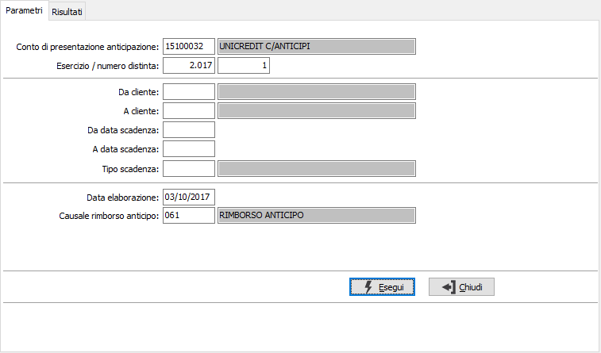
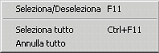
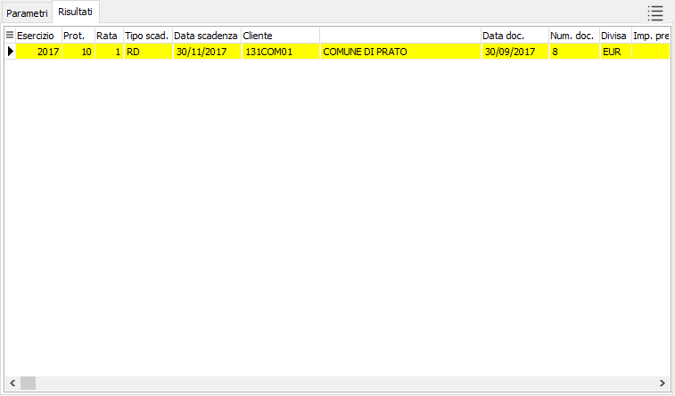

Rimborso anticipo
Il programma di rimborso permette di generare la scrittura contabile di storno del conto anticipi andando ad effettuare un movimento contabile opposto a quello di accensione, quindi l’accredito del conto corrente anticipi con contestuale addebito del conto ordinario.
I parametri di selezione sono la distinta di anticipazione ed è possibile filtrare i dati indicando un intervallo di codici clienti, data scadenza, tipologia movimento scadenza. La data di elaborazione sarà la data del movimento contabile che verrà creato con la causale di rimborso anticipo indicato nel campo sottostante. Il codice causale proposto sarà quello indicato nella configurazione del modulo di gestione anticipi.


Confermata la selezione si accede alla finestra dei “Risultati” dove sono mostrate le informazioni relative alla rate della distinta concesse che devono essere totalmente rimborsate e quelle rate parzialmente incassate da prima nota che potranno essere saldate per la differenza tra l’importo concesso e l’importo già rimborsato. In alto a destra della finestra è presente un pulsante che mostra la legenda dei possibili colori che saranno attribuiti alle righe della griglia. La selezione delle righe può avvenire col doppio clic del mouse o tramite il menù contestuale del tasto destro del mouse.Da segnalare il comportamento della procedura nel caso di rimborso di distinte con una divisa diversa rispetto a quella di gestione; il tasso di cambio del movimento contabile di rimborso sarà quello definito alla data di elaborazione indicata mentre l’importo in Euro del movimento contabile risulterà essere la somma delle singole rate rimborsate sulla base del valore in divisa di gestione ricavate utilizzando il tasso di cambio del movimento di accensione.
Al termine del salvataggio verrà richiesto se stampare la lista di prima nota dei movimenti contabili generati.
